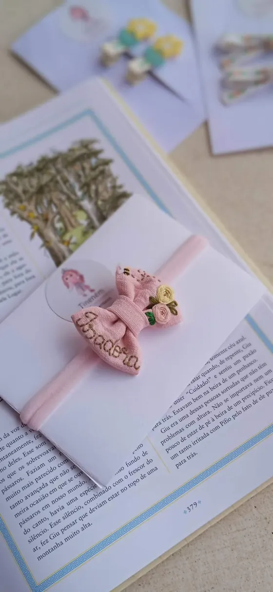
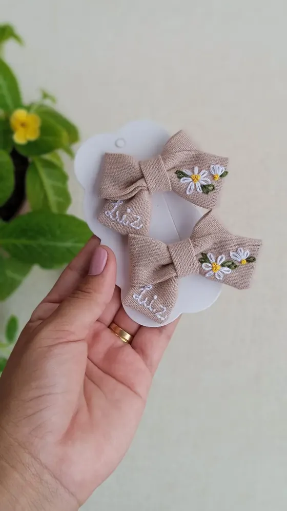

Laços de tecido bordados à mão!
Cada peça é feita, bordada e finalizada ponto a ponto pela Irlem. Delicados e atemporais, feitos com amor de mãe.
Do outro lado do guarda-roupa
“Do outro lado do guarda-roupa, sempre é Natal.”
Laços bordados com postes de luz na neve, pinheirinhos, azevinho e passarinhos de inverno. Cada um chega numa cartela de “Era uma vez…”, pronto para presentear.
❄ Pedidos de Natal até 08/12 para receber antes do dia 24.
Não sabe o tamanho, o nome ou a cor?
“Era uma vez… um laço escolhido por ela.”
A Irlem envia um cartão digital pelo WhatsApp, com o nome da pequena e a sua mensagem, para você encaminhar ou mostrar no Natal. Depois, ela escolhe o laço com a Irlem até 31/03.
Pagamento por Pix ou dinheiro. Se o laço escolhido custar mais, é só completar a diferença.
Escolha o modelo
Todos os laços são feitos sob encomenda. Toque em “Quero esse” para escolher o nome, a cor e enviar o pedido à Irlem. Nome bordado incluso no valor. Delivery cobrado à parte.
Conforto garantido: Faixinhas em meia de seda premium: confortáveis, maleáveis e que não apertam nem marcam a cabecinha da sua pequena.

O que as mães dizem
Mensagens que a Irlem recebeu das clientes depois da entrega.
Mulherrrr. Que perfeição de laços são esse hem? Fiquei encantada com tanta delicadeza. 😍
E fiquei encantada com cheirinho que eles possuem também. 🤭
E obrigada pelo mimo, também fiquei surpresa. 🥰
Arrasouuu 👏👏
Oi amiga, boa noite! Que laços lindos são esses 😍😍😍. Amei demais da conta, minha princesa amou, ficou encantada com essas perfeições em laços! Muito obrigada 😘😘😘
❤️
Amiga já recebi minha encomenda
Obrigada
Eu amooo cada detalhe 👏👏😍
Obrigada ❤️
Eu amei, muitooo obrigada
Super cheirosos e delicados
Vou usar muito nela, tudo feito com muito amor e carinho
😍
Amiga não tenho palavras pra descrever como seu trabalho é lindo e perfeito
Eu estou muito apaixonada 🥰 esse brinde 😍🥰
Do tecido à cabecinha dela
-
Escolha o modelo
Navegue pelo catálogo. Na dúvida sobre o tamanho, a Irlem ajuda pelo WhatsApp.
-
Combine os detalhes
No WhatsApp, diga o nome, a cor e as flores que você gostaria. A Irlem confirma o pedido e o prazo.
-
Feito à mão
O laço é costurado e bordado ponto a ponto, só para você, em até 10 dias úteis.
-
Receba
Retire com a Irlem ou receba por delivery, pronto na cartela para presentear.
- Prazo
- 10 dias úteis
- Contados a partir da confirmação de pagamento de 50% do valor.
- Entrega
- Retirada ou delivery
- A taxa do delivery depende do bairro e é combinada pelo WhatsApp.
- Pagamento
- Pix ou dinheiro
- 50% de sinal para começar o laço e o restante na entrega.
- Valores
- A partir de R$ 28
- Nome bordado e acabamento já inclusos. O delivery é cobrado à parte.

Feitos a mão, com amor de mãe
A Tineném nasceu nas mãos da Irlem Vieira, em Castanhal. Cada laço começa num pedaço de tecido e termina com florzinhas, abelhas, borboletas e o nome de quem vai usar, tudo bordado à mão.
Quer ver os laços nas pequenas clientes e o que as mães estão dizendo? Está tudo nos destaques do Instagram.
Irlem VieiraPerguntas frequentes
Tudo o que você precisa saber antes de fazer sua encomenda com a Irlem.
A faixinha serve até qual idade?
Nossas faixinhas acompanham o crescimento da bebê desde recém-nascida até os 2 anos (ou mais). Usamos meia de seda especial, ultra macia e flexível, que se adapta suavemente à cabeça sem apertar nem marcar a pele sensível da pequena.
Minha bebê tem pouco cabelo, o bico de pato segura?
Sim! Para bebês com fios fininhos ou pouco cabelo, aplicamos uma borrachinha 100% antideslizante no bico de pato (semi-encapado com tecido). Assim o laço fica firme e não escorrega, sem puxar nem machucar.
Vocês entregam para outras cidades ou apenas em Castanhal?
No momento atendemos e entregamos apenas em Castanhal-PA. Você pode optar por retirada combinada direto com a Irlem ou entrega por delivery (motoboy), com a taxa combinada pelo WhatsApp dependendo do seu bairro.
Como lavar e guardar os laços bordados?
Por serem peças delicadas feitas e bordadas à mão, recomendamos lavar à mão com água fria e sabão neutro, sem torcer nem esfregar os pontos bordados. Deixe secar na sombra e guarde na cartelinha da Tineném ou em uma caixinha arejada para manter o formato perfeito.